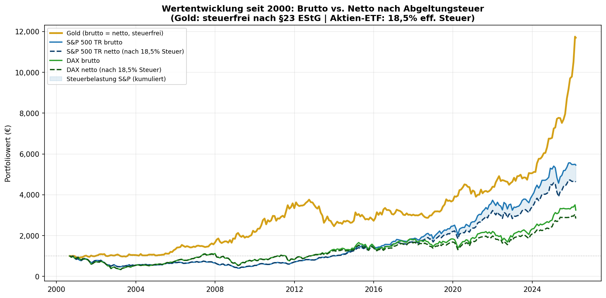
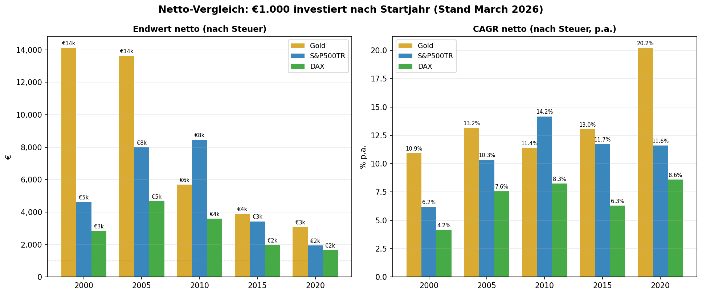
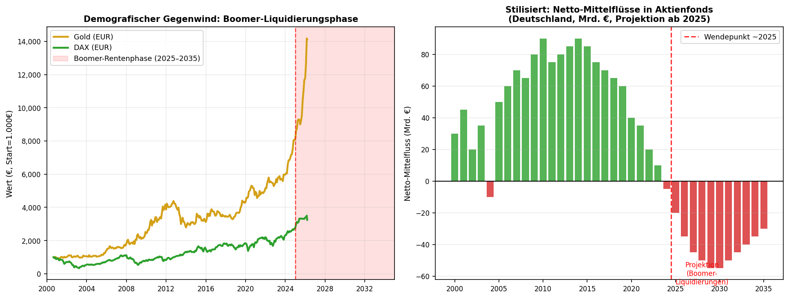
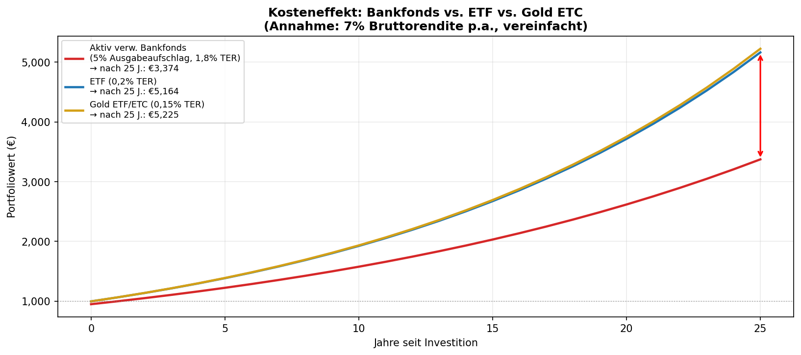

Gold as a Capital Investment
Performance, Tax Advantages, Demographic Outlook
and the Role of Banks
As of March 2026 · Data sources: Yahoo Finance, ECB, London Bullion Market
1 Methodology and Data Sources
This analysis compares physical gold (XAU, London PM fix) with the S&P 500 Total Return Index (USD, including reinvested dividends) and the DAX Performance Index (EUR, including dividends) from the perspective of a German investor. All values have been converted to euros. The starting capital is €1,000 each, invested at the beginning of the month in the years 2000, 2005, 2010, 2015, and 2020. For the tax analysis, the current German flat-rate withholding tax (26.375% including solidarity surcharge) and the partial exemption of 30% for equity ETFs (effective tax rate: 18.46%) are applied.
2 Performance Since January 2000
An investor who placed €1,000 each in gold, the S&P 500 TR, and the DAX in January 2000 would see fundamentally different results today: Gold grew to €14,115 (10.9% p.a.), the S&P 500 TR to €5,452 (6.9% p.a.), and the DAX to €3,249 (4.7% p.a.). Gold significantly outperforms both equity indices over this period.
The key to gold's outperformance lies in two severe stock market crises: First, the dotcom bubble (2000–2002), during which the DAX and S&P 500 lost more than 50% while gold remained nearly stable. Second, the financial crisis of 2008/09, when equities again plunged roughly 50% and gold was in demand as a safe haven. In both cases, equity investors first had to recover years of losses before any growth could be achieved – a so-called "lost decade."

Fig. 1: Gross and net performance since 2000 in EUR (including withholding tax)
3 Comparison by Entry Year
Depending on the entry point, the picture changes significantly. Gold dominates during crisis periods and with a long time horizon; the S&P 500 TR overtakes gold in the 2010–2019 period, when zero-interest-rate policy and the tech boom massively boosted equities. From 2020 onward, gold leads again, driven by inflation and currency risks. The following table shows gross and net results.
| Start | Years | Gold net | Gold CAGR | S&P 500 net | S&P CAGR | DAX net | DAX CAGR | Gold advantage* |
|---|---|---|---|---|---|---|---|---|
| 2000 | 26 | €14,115 | 10.9% | €4,630 | 6.2% | €2,834 | 4.2% | +€9,485 |
| 2005 | 21 | €13,630 | 13.2% | €7,984 | 10.3% | €4,678 | 7.6% | +€5,646 |
| 2010 | 16 | €5,688 | 11.4% | €8,467 | 14.2% | €3,593 | 8.3% | -€2,779 |
| 2015 | 11 | €3,900 | 13.0% | €3,433 | 11.7% | €1,972 | 6.3% | +€467 |
| 2020 | 6 | €3,080 | 20.2% | €1,957 | 11.6% | €1,657 | 8.6% | +€1,123 |
* Gold advantage net: Difference to the best equity index after tax. Net = after withholding tax (gold tax-free; equity ETF 18.46% eff.).

Fig. 2: Final value and net CAGR by entry year (after withholding tax)
4 Tax Advantages of Gold in Germany
Tax legislation in Germany uniquely favors physical gold over securities. The difference is substantial and systematically underestimated by many investors.
4.1 Speculation Period Under §23 Income Tax Act (EStG)
Physical gold (bars, coins) qualifies as a private disposal transaction. Gains from the sale are completely tax-free after a holding period of more than one year – with no limit on the amount. An investor who bought gold for €1,000 in 2000 and sells today realizes a tax-free gain of approximately €13,115. No other investment vehicle offers this combination of return potential and complete tax exemption.
4.2 Stocks and ETFs: Withholding Tax and Advance Lump Sum
Capital gains and dividends from stocks and equity funds are subject to the flat-rate withholding tax of 25% plus 5.5% solidarity surcharge, totaling 26.375% (excluding church tax). While equity ETFs benefit from a partial exemption of 30%, reducing the effective tax rate to approximately 18.46%, every accumulating fund is additionally subject to the advance lump sum (Vorabpauschale) – a minimum annual taxation even without a sale. This ongoing tax burden significantly erodes the compound interest effect.
4.3 Quantitative Tax Impact
The tax impact is substantial: €1,000 in an equity ETF since 2000 grows to €5,452 gross, but only €4,630 after tax. Gold, by contrast: gross and net €14,115. The tax deduction on the S&P 500 ETF alone amounts to €822 – nearly as much as the entire final wealth of the DAX investor after tax.
Gold (physical, >1 year): 0% tax on capital gains
Equity ETF (accumulating): 18.46% eff. tax on capital gains + annual advance lump sum
Direct stocks / actively managed funds: 26.375% on capital gains and dividends
Gold ETF/ETC: These are taxed like securities – no tax advantage!
Important: Only physical gold (bars, coins such as Krugerrand, Maple Leaf, Vienna Philharmonic) benefits from tax exemption under §23 EStG. Gold ETFs, gold ETCs (e.g., Xetra-Gold with physical delivery option: tax-free; others without delivery right: taxable!) and gold mining stocks are taxed like securities.
5 Demographic Headwind for Stocks: The Boomer Liquidation
The baby boomer generation (born approx. 1946–1964) is the wealthiest investor generation in history. Over decades, they have systematically invested capital in stocks, equity funds, and occupational pension plans – and are now on the verge of withdrawing this capital.
5.1 The Scale of Capital Reallocation
In Germany, private households hold stocks and investment funds worth over €1.5 trillion according to the Bundesbank. The majority of this is held by the 60+ generation. In the United States, boomers (born 1946–1964) manage approximately 52% of total equity wealth as of 2023 – a share that has never been so concentrated in history. Between 2025 and 2035, the strongest cohorts will reach ages 70–80 and begin liquidating savings for living expenses, care costs, and inheritances.
5.2 Structural Consequences for Equity Markets
The classic financial market model states: stock prices rise when more capital flows into equities than flows out. For decades, boomers were the dominant net buying force. This lever is now reversing. At the same time, the succeeding generations (Gen X, Millennials), while larger in absolute numbers, are significantly poorer – due to higher property prices, student debt, and lower real wages. They cannot fully absorb the boomers' structural net selling.
Net outflows from equity funds: In the US, analysts (BofA, JPMorgan) have observed rising net withdrawals from 401(k) plans by those over 65 since 2022.
Required Minimum Distributions (US): From age 73, boomers must annually withdraw percentages from retirement plans and pay taxes – forced sales.
Europe/Germany: Riester, Rürup, and occupational pensions will pay out billions in the coming years, requiring funds to liquidate.
Inheritance wave: When older boomers pass wealth to children/grandchildren, portfolios are often restructured or sold.
5.3 Gold Benefits Structurally
Gold has no "owner" who must sell. The most important structural gold buyers are central banks (record purchases 2022–2024 according to the World Gold Council: over 1,000 tonnes p.a.), emerging middle classes in Asia (China, India), and sovereign wealth funds. This demand is demographically independent and growing. At the same time, gold supply is declining: new mines are developed less frequently, and production costs (All-in Sustaining Costs) rise annually.

Fig. 3: Demographic headwind – stylized outlook for net fund flows (projection from 2025)
6 Mis-selling by Banks and Financial Distributors
The analysis of historical returns shows that gold has been one of the highest-yielding and most tax-efficient investment forms of the past 25 years. Yet banks and financial distributors systematically recommend gold little or not at all. Behind this lie structural conflicts of interest that carry significant costs for investors.
6.1 The Commission Model and Its Consequences
Bank advisors and financial distributors are predominantly compensated through commissions paid by product providers. Actively managed funds pay front-end loads (typically 3–5%), ongoing trail commissions (approx. 0.5–1.0% p.a.), and in some cases performance fees. Gold has no such commission structures – the advisor earns virtually nothing from recommending gold.
6.2 Cost Impact Over Time
The combined costs of an actively managed bank fund are devastating for investors. A typical front-end load of 5% means that €50 of every €1,000 is lost immediately. In addition, ongoing costs (TER) of 1.5–2.5% per year compare unfavorably with 0.1–0.2% for low-cost ETFs or 0% for physical gold (one-time purchase spread approx. 1–2%).

Fig. 4: Cost impact: Bank fund vs. ETF vs. physical gold (7% gross return, 25 years)
The chart illustrates the dramatic impact of ongoing costs over 25 years: The bank fund investor achieves significantly less than the ETF investor at the same gross return of 7% p.a. – solely due to higher costs.
6.3 Notable Cases of Mis-selling
The list of structural mis-selling in Germany is long and well-documented. During the 2008 financial crisis, hundreds of thousands of investors lost substantial sums through Lehman certificates that had been sold as "safe" by savings banks and cooperative banks – with full commissions for the advisors. Closed-end funds (ship funds, real estate funds) were recommended as "solid real asset investments" before going insolvent en masse. The Federal Association of Consumer Advice Centers documents thousands of cases of financial mis-advice every year.
Conflict of interest: Advisors earn from funds, not from gold or ETFs.
Information asymmetry: Costs and commissions are often not transparently disclosed (MiFID II improves this, but implementation remains deficient).
Complexity as a tool: The more complex the product, the harder the comparison – and the higher the margin.
Proprietary products: Banks favor their own funds, whose costs are particularly high (house funds).
Market timing: Bank funds are often heavily marketed and sold at market peaks (e.g., technology funds in 1999/2000).
6.4 Regulatory Situation
The EU financial markets directive MiFID II (since 2018) mandates greater transparency on costs and conflicts of interest. In practice, however, the rules are often formally complied with without providing genuine education. The United Kingdom banned commissions for financial advice in 2012 (RDR), which led to significantly more cost-effective investment recommendations there. In Germany, a comparable ban has not been implemented despite EU-level discussions.
7 Conclusion and Outlook
The data is clear: Physical gold has served European investors better than equities over the past 25 years – and this is even more true after taxes. The three main reasons are:
Crisis resilience: Gold barely loses value in market crashes, while equities dropped 50%+. The resulting recovery periods cost returns.
Tax advantage: Physical gold is completely tax-free after one year. The tax advantage over equity ETFs amounts to several thousand euros over 25 years.
Currency effect: The weaker US dollar additionally strengthened the gold price from a EUR perspective.
For the coming years, structural tailwinds are building: Boomer generation liquidations are likely to weigh on equity indices, while central bank demand and geopolitical uncertainty continue to support gold. Added to this is the increasingly multipolar world order, in which many states are replacing dollar reserves with gold (de-dollarization).
Nevertheless, gold is not a cure-all: From 2010 onward, the S&P 500 TR showed clear outperformance. A balanced strategy is recommended – with a gold allocation as a crisis buffer and tax-efficient store of value, complemented by low-cost equity ETFs for long-term growth. Most importantly: avoid actively managed bank funds with high costs – over decades, they cost more than the difference between asset classes.